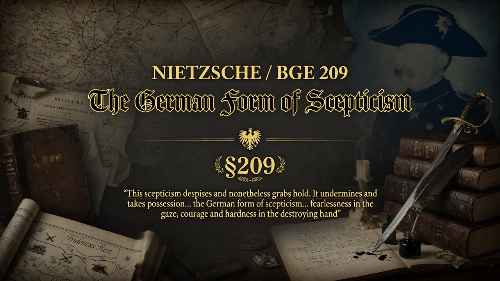
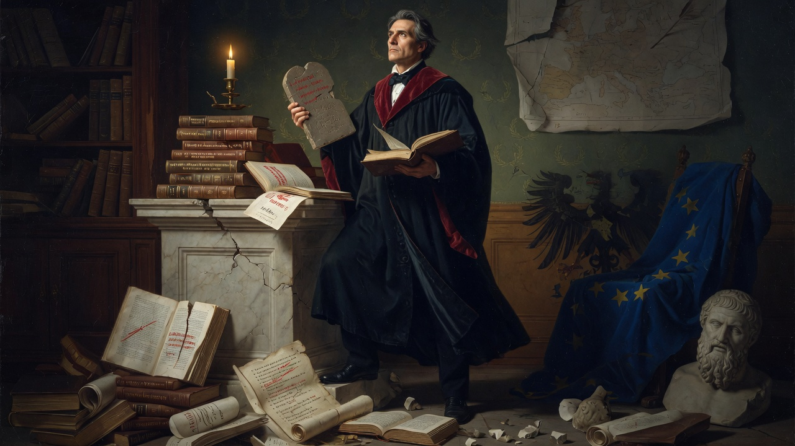

Part Six: We Scholars • Beyond Good and Evil
Nietzsche suggests warlike eras can breed tougher, more dangerous scepticism than soft peaceful cultures. He points to Prussian history as an example of disciplined doubt tied to strength. Not all scepticism is lazy—some is forged.
Section 209 speculates that the new warlike age into which Europe was entering might foster a stronger, more dangerous variety of scepticism. Nietzsche offers a historical comparison drawn from Prussian history. Frederick William I, the “unthinking enthusiast for good-looking, excessively tall grenadiers,” created through his military and sceptical genius the new type of German who later proved victorious. His aversion to his son Frederick sprang from an instinctive recognition that what Germany lacked above all was men—hard men capable of commanding.
The father feared his son’s decline into French wit, atheism, and the “great blood sucker, the spider of scepticism.” Yet from that very tension emerged a harder, more masculine scepticism: “the scepticism of the daring masculinity, which is closely related to the genius for war and conquest.” In Frederick the Great this form first gained entry into Germany.
This German scepticism “despises and nonetheless grabs hold. It undermines and takes possession. It does not believe, but in so doing does not lose itself. It gives the spirit a dangerous freedom, but it is hard on the heart.” It is expressed in the great German philologists and critical historians—artists of destruction—who established a new idea of the German spirit: fearlessness in the gaze, courage and hardness in the destroying hand, the tough will for dangerous voyages of discovery. Michelet called it “cet esprit fataliste, ironique, méphistophélique.”
Key Insight: Not all scepticism is weakness. A hard, warlike, critical scepticism can be the precondition for cultural dominance and new creation—provided it remains tied to strength of will rather than soft humanitarianism.
Modern companion: In an age that often equates scepticism exclusively with tolerance, deconstruction, or polite doubt, Nietzsche reminds us that a rigorous, destructive, unsentimental critical spirit has historically been a source of power. The free spirit today can cultivate a similar disciplined hardness—fearless looking, precise dismantling—without falling into either sentimental “objectivity” or nihilistic drift. The task is to turn the tools of critique toward the creation of new rank and new goals rather than endless dissolution. Europe’s cultural influence once rode on exactly this combination of critical intellect and commanding will; recovering a version of it may again be necessary.

